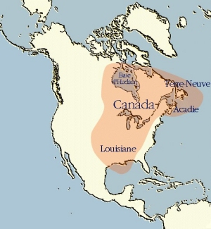
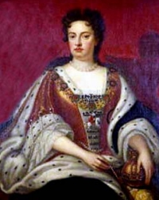
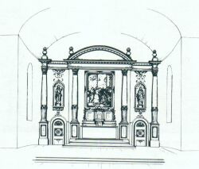
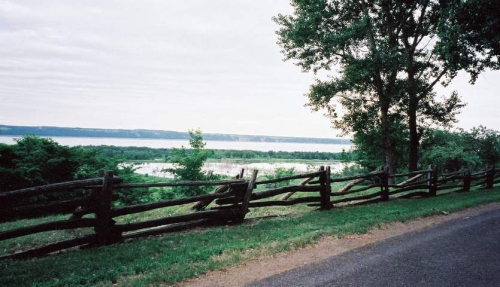

|
THE LIFE OF
PIERRE CHORET
Pierre's youth was
marked by major events
 On
November 28, 1698, Louis Buade de Frontenac died
in Quebec. On April
20, 1699, Louis XIV appointed Louis-Hector de Callière governor
of New France. On
November 28, 1698, Louis Buade de Frontenac died
in Quebec. On April
20, 1699, Louis XIV appointed Louis-Hector de Callière governor
of New France.
The 18th century began, and the New France of the St. Lawrence was more and more
often called Canada.
On August 4, 1701, « the Great Peace of Montreal » was signed
with the Five Iroquois Nations, a treaty that broke the Anglo-Iroquois
coalition. The raids between English and French went on all the same.
On May 15, 1702, the second
intercolonial war began. In 1703 Philippe Rigaud de Vaudreuil became
governor general, until 1725. The Sovereign Council became the Superior Council.
In 1710 Michel Bégon de la Picardière
became intendant of New France,
until 1726.
 "France
has the space there, and England the numbers..."
At the start of the 18th century, New France, thanks to the daring
of the explorers of the previous century, was a vast
territory in America. The English settlers were confined
near the ocean. The guerrilla war went on, raid
answering raid. On each side, people burned, looted,
killed or carried off captives. The people of
New England felt more and more threatened, even
though they then outnumbered the French settlers 16 to one.
Official reports,
French and British, show that each side dreamed of
conquering the other's territory and so securing a colossal
commercial monopoly.
Unlike in 1690, this time England had the
upper hand in the war it was waging in Europe, so it could
afford to help New England in its struggle against New France.
 In
1709 Queen Anne of England ordered "that the English
settlers be delivered from the neighbourhood of the French of Canada".
Confessions extracted from English prisoners revealed to the
authorities of New France that an attack was imminent. A large fleet was to leave England with
money, munitions and men. Four thousand more
men were to attack by land.
In other words, the same plan as in 1690, but with more
resources. Needless to say, New France was on
the alert, but rather helpless in the face of the scale of the expected
attack.
On the night of August 16 to 17, 1710, word came to Quebec that a
fleet was coming up the river. The order was given to scatter
the livestock in the woods. The women and children
withdrew to the countryside, while the men went into the
town. Everyone worked to fortify the town. Fortunately, a few days later it turned out to be a
false alarm. But it was only postponed: the
leaders of New England were already planning how to divide up the
territory to be conquered.
The
great British offensive
In 1711 Pierre Choret
was 21 and thinking of marriage.
But a threat hung over
the settlers of Canada. The same war scenario that had
unfolded in the year of Pierre's birth was soon to be
repeated.
In London, on April 16, 1711, a messenger from Queen Anne
called on Sir Hovenden Walker to order him to
take command of a veritable armada with orders to
seize Canada.
The fleet left Portsmouth and reached Boston in
July. There it took on supplies and made its final
preparations. General Hill had a letter printed
to be handed out to the Canadiens after the victory. It
said that those who offered no resistance "will be
favourably received and treated, they and their heirs....
will enjoy possession of their lands and freedom of
religion....."
On August 9 the fleet left Boston; in all, 12,000 men
were part of the expedition. Now, the last days of August 1709 were
marked, at the mouth of the St. Lawrence River, by bad
weather and fog. On the night of September 2
Walker was asleep in his cabin, convinced that his fleet was sailing up
the middle of the St. Lawrence channel, level with Anticosti
Island. But in reality part of his fleet
ran aground on the North Shore, at the place now
called Baie-des-Anglais (Englishmen's Bay). Walker lost about 1,600
men and several ships. The survivors spent the
next two days trying to save men and baggage.
At a council of war held on September 4, the decision was
made to abandon the planned attack on Quebec and set
course for Boston. Eager to deliver his report, Walker returned to London.
His conclusions were
"that because of the ignorance of the pilots, it is
altogether impossible to go up the St. Lawrence River with
men-of-war and transports as high as Quebec,
given the uncertainty and swiftness of the currents,
as has just been proved by a fatal experience."
Meanwhile, on
the shores of Lake Champlain, Nicholson, at the head of 2,000 soldiers
and militiamen and a few hundred Native allies, was waiting for
news of the attack on Quebec to join up with Walker's
army, attacking Montreal and Trois-Rivières on
the way. On learning of Walker's retreat, Nicholson did
the same.
Phew!!! Canada was
saved without having to fight. Pierre could marry.

|

Hypothetical
reconstruction of the altarpiece of the first church in
Charlesbourg.
Drawing by Denis Castonguay.
|
On February 1,
1712, Pierre Choret married Angélique Turcot in the parish
of Saint-Charles-Borromée in Charlesbourg.
Angélique was 20; she was the daughter of
Jean Turcot and Marie Rose.
Their marriage contract had
been signed on January 24, before notaire (notary)
J.R. Duprac.
|
The first church in Charlesbourg, built in
1697, stood a few metres north of
the present church (shown here).
It was in this first
church that Pierre married Angélique,
and the couple settled in Charlesbourg.
Their first children were born there: Anne in 1713,
Élisabeth in 1714 and Pierre in 1716.Charlesbourg
is in the northern part of the Seigneurie (seigneury)
Notre-Dame-des-Anges. The Jesuits developed it in
1665, following a radial plan for dividing up the
land. Under this layout, known
as the Trait-Carré, the lots, cut into
triangles, are grouped like a wheel around the church in
the centre, forming a perfect square. This particular
arrangement had the advantage of bringing the settlers
closer to one another. This exceptional layout,
still known today as the Trait-Carré of
Charlesbourg, was safeguarded when it was
declared a historic district by the Quebec government
in 1965.
|

The present church of Saint-Charles Borromée in Charlesbourg,
built in 1827.
|
| The
Turcots
Jean Turcot, Angélique's
father, was born around 1643 in La-Roche-sur-Yon,
France. Jean was a gardener. We know he was in
New France in 1687. There are also records, in
1690 and 1701, of contracts signed by Jean Turcot to
work as an "engagé Ouest" (hired man for the West), probably
in the fur trade in the Pays d'En
Haut (Upper Country).
On January 12, 1688, at 45,
Jean Turcot married Marie Rose, 21, born
on December 17, 1666, in Sainte-Famille, Île
d'Orléans. Marie was the daughter of Noël Rose, a
shoemaker born around 1642 in Saint-Étienne-du-Mont near
Paris, and Marie Montminy, born on February
26, 1646, in Rouen, Normandy. Marie's parents
had married on November 7, 1666, in
Quebec.
Jean Turcot and Marie Rose had
several children, including our ancestor Angélique, born on September 6, 1691. They
settled on a lot in the Trait-Carré of
Charlesbourg. Jean seems to have been an important
man, since influential people
attended the baptism of his daughter Angélique: her
godfather was the captain of the guards of the Comte de Frontenac,
and her godmother was the wife of
Monsieur de Villeray, first councillor of the
Sovereign Council.
Marie
Rose died on June 19, 1711. Jean, now 69,
remarried on December 14, 1712, to a widow from Neuville, Geneviève
Ayotte. Jean Turcot did not die on his land in Charlesbourg, but in Saint-Laurent,
Montreal, on June 5, 1729.
|
In 1715 the population
of New France was 18 500, and that
of New England 434 000.
On September
1, 1715, Louis XIV died. He was succeeded on the throne by his great-grandson
Louis XV, aged 5. Philippe, Duc
d'Orléans, served as regent, then the Duc de Bourbon
and finally Cardinal Fleury. It was not until
1748 that
Louis XV reigned in person. |
The
big move to the island of Montreal
Around 1717 Pierre made a big decision: to leave the Quebec City
region for the Montreal region. We don't know his reasons, but they
were probably economic. Montreal had become
the economic centre of Canada, and its rapid growth
drew young people. This move
was quite an expedition: more than 250 kilometres,
no road fit for carts, young children and, surely, the
household goods essential for setting the family up
in its new home. Did they travel by river?
Very probably; the St. Lawrence River was still, at
the time, the main route, as it had been since the
beginnings of the colony.
Pierre settled
his family
in the "Coste St-Michel". The parish of Notre-Dame kept
the registers for the whole island. The baptisms of
two children were recorded there, in 1718 and 1719. The baptisms
of the following children are found in the registers of the parish of
St-Laurent, which opened in 1720, and the last one in the registers of
the parish of Sault-au-Récollet, which opened in 1736. There is one
exception: three children were baptized, from 1725 to 1728, in the
parish of Notre-Dame. According to the children's baptism records,
Pierre and Angélique lived in the Coste St-Michel, which was eventually
attached to the parish of Sault-au-Récollet.
Their neighbours and
friends were Ignace Lemay and Anne Lecompte, two of whose daughters
would marry the two Choret sons. Several Turcots also
lived in the Coste St-Michel, including three of Angélique's brothers,
Jean, Louis-Gabriel and Pierre, as well as their father.
It
seems that
Pierre was a laboureur (farmer), like most
people of the time. But people could also take on other
jobs. We know that in 1727 Pierre Choret was "foreman
of the ménagerie des pauvres" (poorhouse). That is, he
was in charge of a kind of shelter and social
assistance office. As early as the 17th century the government had set
up "bureaux des pauvres" (poor relief offices) to help
people in need.
Pierre was the first
of the children of Pierre le Cadet to move to Montreal, but
three of his younger brothers, Ignace, Michel and
Jean-Baptiste, and a sister, Marie-Joseph, would follow him, and
even marry there.
There is an ordinance of October 7,
1726, about the seizure of a canoe full of beaver pelts,
and a fine handed to the offender, by Choret brothers
working as guards for the Compagnie des Indes (Company of the Indies).
Clearly, for the young men of the time, the future lay
to the West. Even the government believed it, since it
sent La Vérendrye on expeditions ever farther west; he
would stop at the foot of the Rockies.

In 1735,
from Quebec to Montreal, on the north shore of the St. Lawrence,
the Chemin du Roy (King's Road) was opened (unpaved, of course), a four-year
project including 13 bridges. From then on, you could travel from one
town to the other with a single horse, in four days
On May 5, 1736,
Pierre le cadet Choret, Pierre's father, died in Beauport.
In 1742, the
two sons
of Pierre who reached adulthood, Pierre and Joseph,
married two Lemay sisters on the same day, in
Sault-au-Récollet,
On January 23, 1748,
Marie-Anne Beaugis, Pierre's mother, died in Beauport.
Pierre saw his first grandchildren born before he died
on July 22, 1749, in Sault-au-Récollet, at the age of 59.
His widow Angélique remarried on October 5, 1750, to Jacques
Messier, in Sault-au-Récollet. He died there on February
10, 1764. We do not yet know when
Angélique died.
|